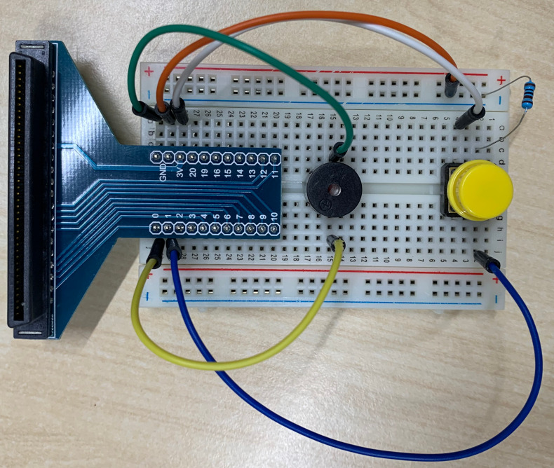
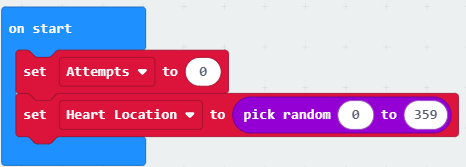
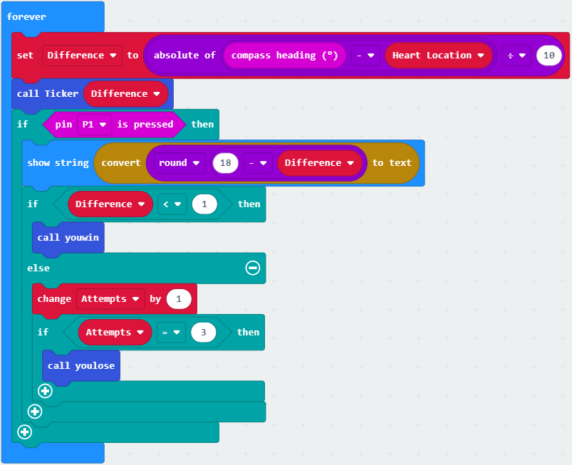
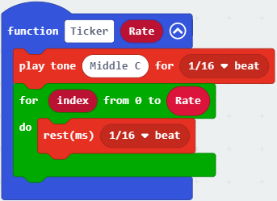
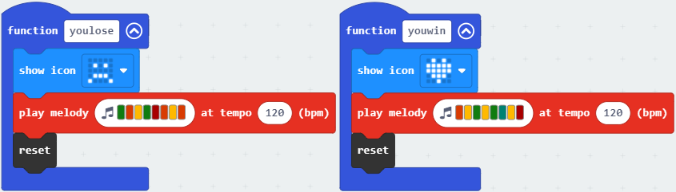
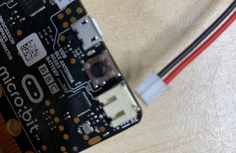
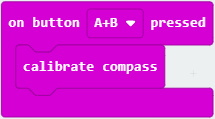

Microbit Heart Finder
Download Project Resources View on Github
Get started with the Microbit starter pack and this neat little game!

What it does
Using the Microbit's internal compass, find the correct location for the hidden heart by listening to the "clicks" from the buzzer while you move the microbit around.. when the clicks get fast, you're closer to the target, press the button to reveal a heart! Or a sad face if you get it wrong.
In the kit below, you will find everything you need to assemble the project.
Bill of Materials
| Qty | Code | Description |
|---|---|---|
| 1 | XC4322 | BBC Micro:bit Starter Kit |
| 1 | SB2424 | Double pack AA Batteries |
and that's all!
How to Build
Like most projects, it has two main parts: the hardware and the software. The software will require you to plug in the microbit into the computer using a standard micro usb cable, and using the website https://makecode.microbit.org/.
All of the hardware for this project will be in the XC4322 kit.
Hardware
Firstly, place the T adaptor from the microbit kit and place it into the breadboard as shown. You want to make sure that the base of the T adapter pins are connected into row 30 of the breadboard

Then follow up with the tactile button, making sure that the button is connected to pins 2 and 4 on the breadboard (up near the other end).

Now you can connect the buzzer to row 15. have it so that the positive connection is in the F column and the shorter unmarked pin is in the E column. You can also put the yellow cap onto the button if you wish, by simply pushing it down onto the square knob on the button.

Next up, connect the following wires, (colours won't matter, but we've kept it consistent with the photos below)
| Done? | Wire Colour | From | To |
|---|---|---|---|
| [ ] | Green | Buzzer negative 15D |
T-adapter GND 30A |
| [ ] | Orange | T-adapter GND 29A |
Negative rail - |
| [ ] | White | T-adpater 3V 28A |
Button 4A |
| [ ] | Yellow | T-adapter P0 30I |
Buzzer positive 15I |
| [ ] | Blue | T-adapter P1 29I |
Button 2J |
| [ ] | 10K Resistor | Negative rail - |
Button 2C |

If you need to see this a little clearer, we do have a higher res version in the docs/images folder in this project download.
Once the hardware has been assembled, you can move on to uploading the software to the microbit board as below.
Software
Connect the BBC Microbit to your computer via a standard micro USB cable, and open up the make code website https://makecode.microbit.org/_bhLUXrVt7REa
The link above should have the code for you, but we'll go over the code so we know what we're looking at.
Firstly is the on start method.

This function runs when we first turn on the microbit and sets up our microbit game by setting Attempts to zero and Heart Location to a random number between 0 and 359. This will be the location of our heart that we want to find. From here we go on to the forever method, which will run continuously until the device is reset or turns off:

Stepping through the code:
- Set the
Differencescore, which is a number of how close it is to the heart location. - We use
Differencein a function called ticker - Check if a button is pressed on
P1which is connected to our physical button via the blue wire. - If the button is pressed, then:
- Show the score, which is just
round(18 - Difference) - if
Differenceis < 1, then:- call the youwin function
- else increase
Attemptsby 1 - if
Attemptsis 3, then:- call the youlose function
- Show the score, which is just
Finally, we can just define the youwin, youlose, and ticker functions as below. The ticker function actually is what sounds the buzzer by playing a small tone for 1/16th of a beat.

We also rest for 1/16th of a beat, multiple times. You can see that we will loop over "Rate" amount of times, which is defined in the function. If you look at the forever code above, you can see that we actually call ticker funtion with the parameter of Difference.

The winning and losing code is just showing an icon, playing a tune, and reseting the device. When we reset the device, a new Heart Location will be generated, and Attempts will be set to zero again.
Programming the microbit and finishing the game
You can use the download button on the make-code website to download the program and place on your microbit, then disconnect from the computer and connect up the battery.

You can then press the microbit into the T-adaptor, so that the LEDs are facing the PCB board, and turn it on.
If this is the first time you've ever turned on the microbit, the device will go into "Calibration mode". We've also put the code in so you can calibrate it yourself if you find that the game is acting a bit funny, by pressing both the A+B buttons at the same time:

Calibrating the microbit
When the microbit is completely flat ( LEDS are facing UPWARDS ) and in calibration mode, you will find only one LED is lit up. you will have to tilt the microbit around so that the LED moves around the edges of the panel, as well as in to the centre of the LEDs. After a while, you should find that the microbit will go back to game mode and should play better.
How to Use
Turn on the device with the switch on the battery pack, then hold the device close to your chest, pointing downwards.

When the game begins, you will beeping corresponding to how close you are to the correct direction.
If you find the game is behaving a little oddly, chances are the device will need to be calibrated. You can find out how to do this in the instructions at https://jaycar.com.au/microbit-heart-finder/
How it Works
The BBC microbit has a little compass module that tells the microbit which way it is pointing. We use that in this game to detect our direction and find where the hidden heart is. You can find more about the compass module here: